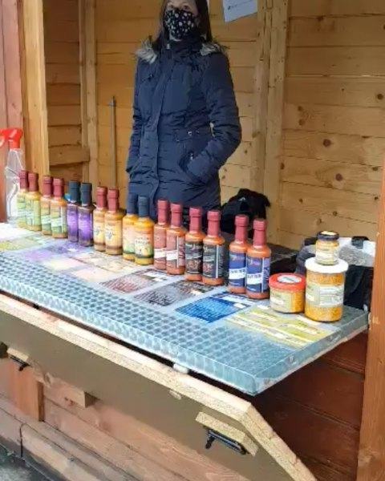

Omáčky podľa @gastonchilli — Normy Jedál
Konečně venku 😎
Přijďte si v té zimě pro něco na 🌶 zahřátí.
#hlucin #ostrava #kdyzjechillitvouvasni #chilli #hot #omacky #sauces #chilliomacka #hotsauce #topsauce #horcice #mustard #hotmustard #chillimustard #topmustard #chillihorcice #farmar #farmarskytrh #trh #food #palipalipali